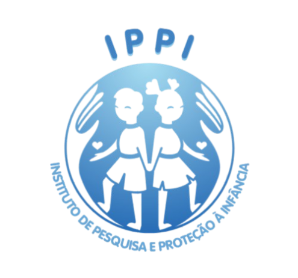

Child labor is any form of work performed by children and adolescents below the minimum age allowed, according to the legislation of each country. In Brazil, work is prohibited for those who have not yet turned 16, as a general rule. However, when done in the capacity of an apprentice, it is permitted from the age of 14. If the work is night work, dangerous, unhealthy, or falls under the TIP list (List of the Worst Forms of Child Labor), the prohibition extends to those under 18 years old. Also concerning are the types of work carried out by children and adolescents that are often accepted by society, such as street vendors, car guards, and tourist guides. This makes child labor invisible, perpetuating its acceptance cycle. According to IBGE, 2.778 million adolescents aged 14 to 17 were in labor situations in Brazil in 2014. However, only 503 thousand were in work allowed by law, with 212 thousand as apprentices and another 291 thousand as non-apprentice employees. The remaining 82% were working without social protection, outside of school, and/or in the worst forms of child labor. In 2022, Brazil had 1.9 million children and adolescents aged 5 to 17 (or 4.9% of this age group) in child labor situations. This number had decreased from 2.1 million (or 5.2%) in 2016 to 1.8 million (or 4.5%) in 2019, but it increased again in 2022.

The consequences of child labor on the lives of children and adolescents are numerous. In addition to often perpetuating the family's poverty cycle, child labor harms a child’s learning, especially when it causes them to drop out of school, and makes them vulnerable in various ways, including health risks, exposure to violence, sexual harassment, intense physical efforts, accidents with machines and animals in rural areas, among others. The full experience of childhood is essential for a child's physical, cognitive, emotional, and social development, which directly impacts the creation of a healthy adult life. What happens at this stage of development can lead to irreversible trauma. Based on this, the IPPI has provided current data and charts that visually represent the child labor situation in various sectors across Brazil and explain how this affects society in a subtle manner.
Av. Padre Antônio Brunetti, 1360
Vila Rio Branco - 13478-700 - Itapetininga - SP
15 3275-7920
Institute for Research and Child Protection, registered with the CNPJ under number 00.111.222/0001-23, is a non-profit organization that, together with other institutions, it aims to monitor, research and combat child labor in Brazil.
2024 © All rights reserved. IPPI